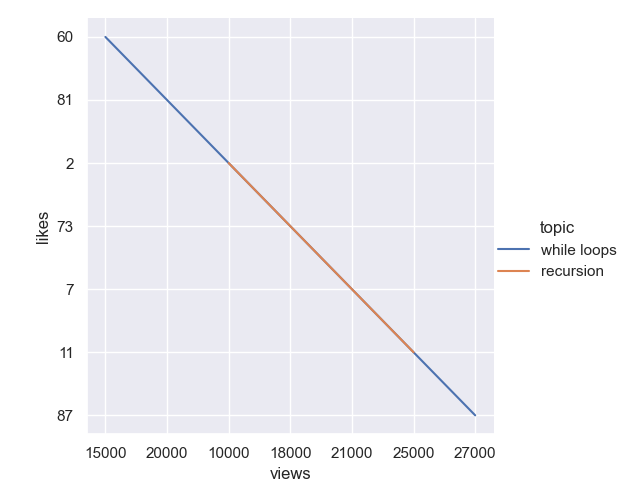
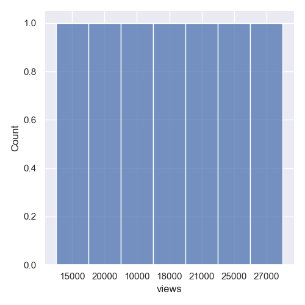

How does students’ major relate to the amount of time they spend studying or working on coursework?



From the analysis, there are some differences in how much time students spend studying depending on their major, but the differences are not extreme. Some majors seem to spend slightly more time on coursework, which suggests that workload may vary across fields. Based on this, one possible improvement would be to make support resources, such as office hours or tutoring, more evenly available for students who spend more time on coursework.
However, the data has limitations. Some responses are missing, and the sample size is not very large, so the results are not completely reliable. It is also possible that differences in study time come from personal habits rather than major alone. In the future, it would help to collect more complete data and ask more detailed questions about how students spend their study time.